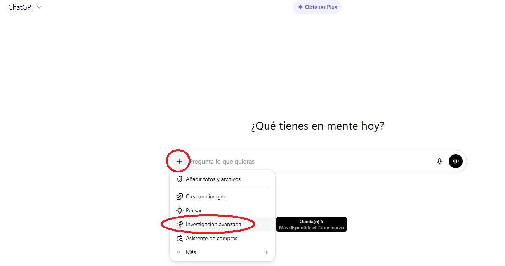
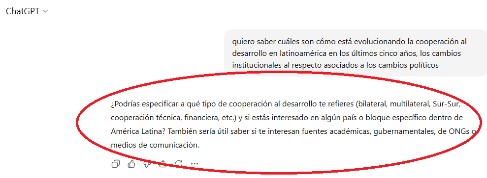
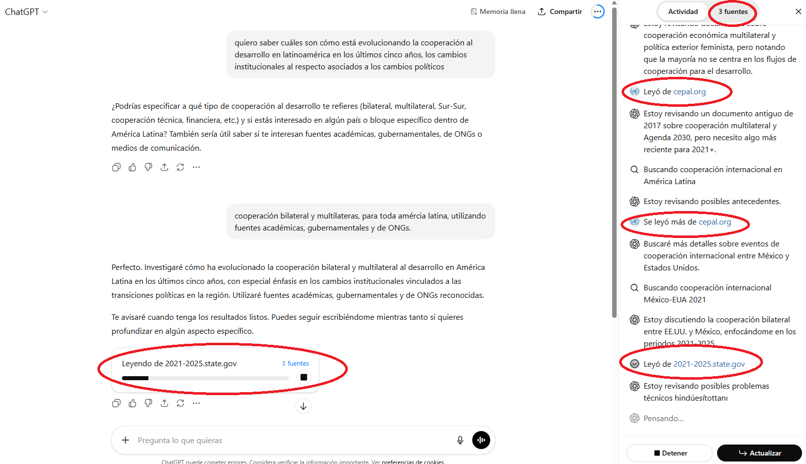
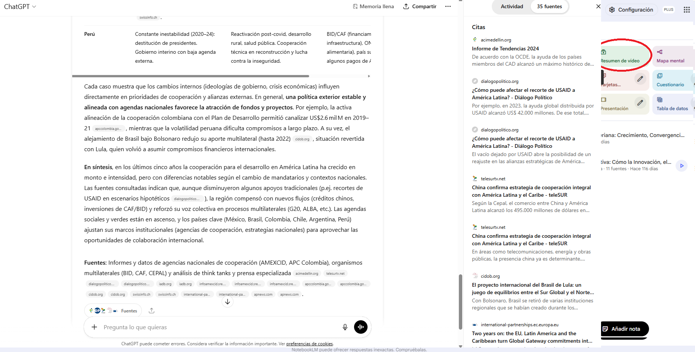
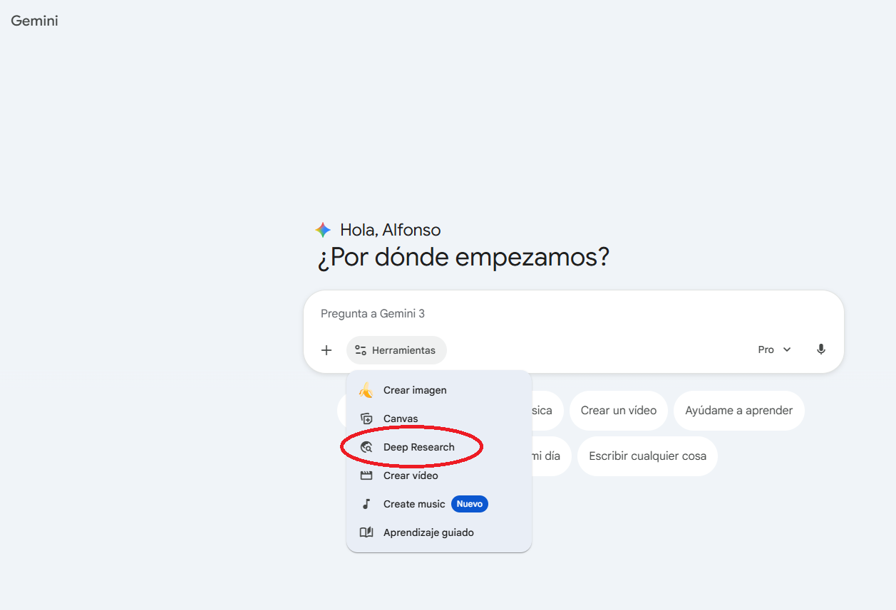
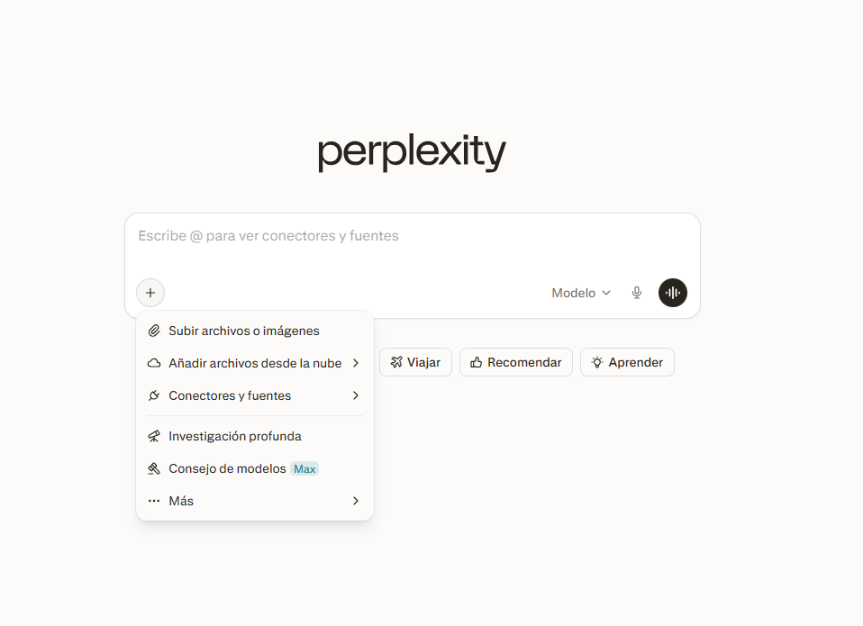

🎯 ¿Qué es Deep Research?
Deep Research es un modo de investigación autónoma disponible en varios servicios de IA. Cuando lo activas, el modelo navega por internet, busca múltiples fuentes, las sintetiza y genera un informe largo y estructurado con citas verificables. Es como tener un asistente de investigación que trabaja durante minutos para darte un resultado de alta calidad.
📌 Servicios disponibles
Deep Research está disponible en varios servicios, cada uno con distintos niveles de calidad y profundidad:
| Servicio | Acceso | Puntos fuertes |
|---|---|---|
| ChatGPT | Gratuito (limitado) / Plus (20 $/mes) | Buen equilibrio entre profundidad y estructura |
| Gemini | Gratuito (limitado) / Advanced (20 $/mes) | Muy extenso, acceso completo a Google Scholar |
| Claude | Pro (20 $/mes) | Más conciso, mayor rigor analítico |
| Perplexity | Gratuito (limitado) / Pro (20 $/mes) | Excelente manejo de fuentes y citas |
| Grok | Incluido en X Premium | Acceso a información reciente en tiempo real |
🚀 Guía paso a paso
Elige tu pregunta de investigación
Piensa en un tema de tu área que te gustaría explorar. Lo ideal es una pregunta concreta y acotada. Algunos ejemplos para economistas:
- «¿Qué efectos ha tenido la Ayuda Oficial al Desarrollo en el crecimiento de África subsahariana?»
- «¿Cuáles son las últimas evidencias sobre el impacto del salario mínimo en el empleo juvenil en Europa?»
- «¿Cómo ha evolucionado la desigualdad regional en España desde la crisis de 2008?»
- «¿Qué metodologías se usan actualmente para evaluar el impacto de políticas de cooperación al desarrollo?»
Accede a Deep Research en ChatGPT
Vamos a empezar con ChatGPT como ejemplo principal:
- Ve a chatgpt.com e inicia sesión
- En el cuadro de texto, busca el selector de modelo (desplegable en la parte superior)
- Selecciona Deep Research en el menú
- Escribe tu pregunta de investigación
- Haz clic en enviar

La IA te mostrará un plan de investigación. Puedes revisarlo y ajustarlo antes de que empiece a investigar.

Espera mientras investiga
Deep Research puede tardar entre 2 y 10 minutos. Mientras trabaja, puedes ver en tiempo real:
- Las fuentes que está consultando
- Las páginas web que está leyendo
- El progreso de la investigación

Revisa el informe generado
Cuando termine, recibirás un informe extenso y estructurado con:
- Secciones temáticas organizadas por subtemas
- Citas y referencias a fuentes verificables
- Datos y estadísticas concretas
- Conclusiones y posibles líneas de investigación

Repite en otros servicios y compara
Ahora lanza la misma pregunta en otros servicios para comparar resultados:
- Gemini: Ve a gemini.google.com, activa Deep Research y haz la misma pregunta
- Perplexity: Ve a perplexity.ai, selecciona el modo de investigación profunda
- Claude: Ve a claude.ai y usa la función de investigación extendida
- Grok: Ve a grok.com y usa la función de investigación extendida
- Mistral: Ve a mistral.ai y usa la función de investigación extendida


Evalúa y compara los resultados
Con los informes de 2-3 plataformas, analiza las diferencias:
- Extensión: ¿cuál es más completo?
- Fuentes: ¿cuál cita fuentes más fiables y académicas?
- Estructura: ¿cuál está mejor organizado?
- Profundidad: ¿cuál profundiza más en los aspectos clave?
- Utilidad: ¿cuál te sería más útil como punto de partida para un trabajo académico?
💭 Consejos y buenas prácticas
- Exploración inicial de un tema nuevo antes de leer la literatura
- Identificar autores clave y papers relevantes que no conocías
- Obtener una panorámica rápida de un campo de investigación
- Preparar revisiones bibliográficas como punto de partida